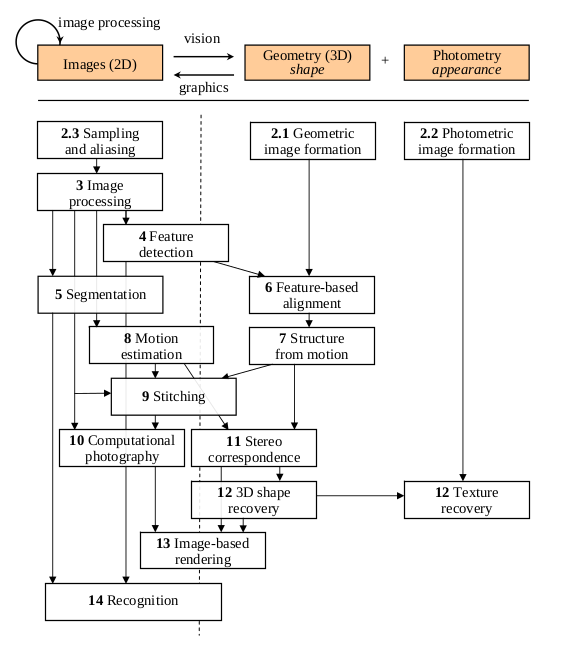

Computer Vision
Table of Contents
1 Introduction
Despite the advances in research in computer vision, the dream of having a computer interpret an image at the same level of a human is still far away. Computer vision is inherently a difficult problem, for many reasons. First, it is an inverse problem, in which we seek to recover some unknowns given insufficient information to specify the solution. Hence, we resort to physics-based and probabilistic models to disambiguate between potential solutions.
Forward models that we use in computer vision are usually grounded in physics and computer graphics. Both these fields model how objects move and animate, how light reflects off their surfaces, is scattered by the atmosphere, refracted through camera lenses and finally projected onto a flat image plane.
In computer vision, we want to describe the world that we see in one or more images and to reconstruct its properties, such as shape, illumination and color distributions. Some examples of computer vision being used in real-world applications include Optical Character Recognition (OCR) , machine inspection, retail, medical imaging, and automotive safety.
In many applications, it is better to think back from the problem at hand to suitable techniques, typical of an engineering approach. A heavy emphasis will be placed on algorithms that are robust to noise, and are reasonably efficient.

The above figure shows a rough layout of the content of computer vision, and we see that from top to bottom, there are increasing levels of modeling and abstraction.
2 Image Formation
2.1 Geometric Primitives
Geometric primitives form the basic building blocks used to describe three-dimensional shapes.
2D points can be denoted using a pair of values, \(x = (x, y) \in \mathbb{R}^2\):
\begin{equation} x = \begin{bmatrix} x \\ y \end{bmatrix} \end{equation}2D points can also be represented using homogeneous coordinates, \(\tilde{\mathbf{x}} = (\tilde{x}, \tilde{y}, \tilde{w}) \in \mathbb{P}^2\), where vectors that differ only by scale are considered to be equivalent. \(\mathbb{P}^2 = \mathbb{R}^3 - (0, 0, 0)\) is called the 2D projective space.
A homogeneous vector \(\tilde{\mathbf{x}}\) can be converted back into an inhomogeneous vector \(\mathbf{x}\) by diving through the last element \(\tilde{w}\).
2D lines can be represented using homogeneous coordinates \(\tilde{\mathbf{l}} = (a, b, c)\). The corresponding line equation is:
\begin{equation} \bar{\mathbf{x}} \cdot \tilde{\mathbf{l}} = ax + by + c = 0 \end{equation}The line equation vector can be normalized so that \(\mathbf{l} = (\hat{n}_x, \hat{n}_y, d) = (\hat{\mathbf{n}}, d)\) with \(\lvert \hat{\mathbf{n}} \rvert = 1\). When using homogeneous coordinates, we can compute the intersection of two lines as
\begin{equation} \tilde{\mathbf{x}} = \tilde{\mathbf{l}}_1 \times \tilde{\mathbf{l}}_2 \end{equation}Similarly, the line joining two points can be written as:
\begin{equation} \tilde{\mathbf{l}} = \tilde{\mathbf{x}}_1 \times \tilde{\mathbf{x}}_2 \end{equation}Conic sections (which arise from the intersection of a plane and a 3d cone) can be written using a quadric equation
\begin{equation} \tilde{\mathbf{x}}^T\mathbf{Q}\tilde{\mathbf{x}} = 0 \end{equation}3D points can be written using inhomogeneous coordinates \(\mathbf{x} = (x,y,z) \in \mathbb{R}^3\), or homogeneous coordinates \(\tilde{\mathbf{x}} = (\tilde{x}, \tilde{y}, \tilde{z}, \tilde{w}) \in \mathbb{P}^3\).
3D planes can be represented as homogeneous coordinates \(\tilde{\mathbf{m}} = (a, b, c, d)\) with the equation:
\begin{equation} \bar{\mathbf{x}} \cdot \tilde{\mathbf{m}} = ax + by + cz + d = 0 \end{equation}3D lines can be represented using 2 points on the line \((\mathbf{p}, \mathbf{q})\). Any other point on the line can be expressed as a linear combination of these 2 points.
\begin{equation} \mathbf{r} = (1 - \lambda)\mathbf{p} + \lambda \mathbf{q} \end{equation}2.2 2D Transformations
The basic primitives introduced above can be transformed, the simplest of which occur in the 2D plane.

2D translations can be written as \(\mathbf{x}' = \mathbf{x} + \mathbf{t}\), or:
\begin{align} \mathbf{x}' &= \begin{bmatrix} \mathbf{I} & \mathbf{t} \end{bmatrix}\bar{\mathbf{x}} \\ &= \begin{bmatrix} \mathbf{I} & \mathbf{t} \\ \mathbf{0}^T & 1 \end{bmatrix}\bar{\mathbf{x}} \end{align}where \(\mathbf{0}\) is the zero vector.
The combination of rotation and translation is known as 2D rigid body motion, or the 2D Euclidean transformation, since Euclidean distances are preserved. It can be written as \(\mathbf{x}' = \mathbf{R}\mathbf{x} + \mathbf{t}\) or:
\begin{equation} \mathbf{x}' = \begin{bmatrix} \mathbf{R} & \mathbf{t} \end{bmatrix}\bar{\mathbf{x}} \end{equation}where
\begin{equation} \mathbf{R} = \begin{bmatrix} \cos \theta & - \sin \theta \\ \sin \theta & \cos \theta \end{bmatrix} \end{equation}is an orthonormal rotation matrix with \(\mathbf{R}\mathbf{R}^T=\mathbf{I}\) and \(\lVert R \rVert = 1\).
The similarity transform, or scaled rotation, can be expressed as \(\mathbf{x}' = s\mathbf{R}\mathbf{x} + \mathbf{t}\). This preserves angles between lines.
The affine transformation is written as \(\mathbf{x}' = \mathbf{A}\hat{\mathbf{x}}\), where \(\mathbf{A}\) is an arbitrary \(2 \times 3\) matrix.
Parallel lines remain parallel under affine transformations.
The projective transformation, also known as the perspective transform or homography, operates on homogeneous coordinates:
\begin{equation} \hat{\mathbf{x}}' = \tilde{\mathbf{H}}\tilde{\mathbf{x}} \end{equation}where \(\tilde{\mathbf{H}}\) is an arbitrary \(3 \times 3\) matrix. Note that \(\tilde{\mathbf{H}}\) is homogeneous.
Each of these transformation preserves some properties, and can be presented in a hierarchy.

Some transformations that cannot be classified so easily include:
- Stretching and Squashing
- Planar surface flow
- Bilinear interpolant
The set of 3D transformations are very similar to the 2D transformations.

2.3 3D Rotations
The biggest difference between 2D and 3D coordinate transformations is that the parameterization of the 3D rotation matrix \(\mathbf{R}\) is not as straightforward.
2.3.1 Euler Angles
A rotation matrix can be formed as the product of three rotations around three cardinal axes, e.g. \(x\), \(y\), and \(z\). This is generally a bad idea, because the result depends on the order of transformations, and it is not always possible to move smoothly in a parameter space.
2.3.2 Axis/angle (exponential twist)
A rotation can be represented by a rotation axis \(\hat{\mathbf{n}}\) and an angle \(\theta\), or equivalently by a 3D vector \(\mathbf{\omega} = \theta\hat{\mathbf{n}}\). We can write the rotation matrix corresponding to a rotation by \(\theta\) around an axis \(\hat{\mathbf{n}}\) as:
\begin{equation} \mathbf{R}(\hat{\mathbf{n}}, \theta) = \mathbf{I} + \sin \theta [\hat{\mathbf{n}}]_\times + \left(1-\cos\theta\right)[\hat{\mathbf{n}}]^2_\times \end{equation}Also known as Rodriguez's formula.
For small rotations, this is an excellent choice, as it simplifies to:
\begin{equation} \mathbf{R}(\mathbf{\omega}) \approx \mathbf{I} + \sin\theta[\hat{\mathbf{n}}]_\times = \begin{bmatrix} 1 & -\omega_x & -\omega_y \\ \omega_z & 1 & -\omega_x \\ -\omega_y & \omega_x & 1 \end{bmatrix} \end{equation}This gives a nice linearized relationship between the rotation parameters \(\omega\) and \(\mathbf{R}\). We can also compute the derivative of \(\mathbf{R}v\) with respect to \(\omega\),
\begin{equation} \frac{\partial \mathbf{R}v}{\partial \omega^T} = -[\mathbf{v}]_\times = \begin{bmatrix} 0 & z & -y \\ -z & 0 & x \\ y & -x & 0 \end{bmatrix} \end{equation}2.3.3 Unit Quarternions
A unit quarternion is a unit length 4-vector whose components can be written as \(\mathbf{q} = (x, y, z, w)\). Unit quarternions live on the unit sphere \(\lVert q \rVert = 1\) and antipodal quartenions, \(q\) and \(-q\) represent the same rotation. This representation is continuous and are very popular representations for pose and for pose interpolation.
Quarternions can be derived from the axis/angle representation through the formula:
\begin{equation} \mathbf{q} = (\mathbf{v}, w) = \left(\sin\frac{\theta}{2}\hat{\mathbf{n}}, \cos\frac{\theta}{2}\right) \end{equation}where \(\hat{\mathbf{n}}\) and \(\theta\) are the rotation axis and angle. Rodriguez's formula can be converted to:
\begin{equation} \mathbf{R}(\hat{\mathbf{n}}, \theta) = \mathbf{I} + 2w[\mathbf{v}]_\times + 2[\mathbf{v}]^2_\times \end{equation}The nicest aspect of unit quarternions is that there is a simple algebra for composing rotations expressed as unit quartenions:
\begin{equation} \mathbf{q}_2 = \mathbf{q}_0 \mathbf{q}_1 = (\mathbf{v}_0 \times \mathbf{v}_1 + w_0 \mathbf{v}_1 + w_1 \mathbf{v}_0, w_0 w_1 - \mathbf{v}_0 \cdot \mathbf{v}_1) \end{equation}The inverse of a quarternion is just flipping the sign of \(\mathbf{v}\) or \(w\), but not both. Then quarternion division can be defined as:
\begin{equation} \mathbf{q}_2 = \mathbf{q}_0 / \mathbf{q}_1 = (\mathbf{v}_0 \times \mathbf{v}_1 + w_0 \mathbf{v}_1 - w_1 \mathbf{v}_0, - w_0 w_1 - \mathbf{v}_0 \cdot \mathbf{v}_1) \end{equation}2.4 3D to 2D projections

We need to specify how 3D primitives are projected onto the image plane. The simplest model is orthography, which requires no division to get the final (inhomogeneous) result. The more commonly used model is perspective, since this more accurately models the behaviour of real cameras.
2.4.1 Orthography
An orthographic projection simply drops the \(z\) component of the three-dimensional coordinate \(\mathbf{p}\) to obtain the 2D point \(\mathbf{x}\).
\begin{equation} \mathbf{x} = \left[\mathbf{I}_{2\times 2} | \mathbf{0} \right] \mathbf{p} \end{equation}In practice, world coordinates need to be scaled to fit onto an image sensor, for this reason, scaled orthography is actually more commonly used:
\begin{equation} \mathbf{x} = \left[s\mathbf{I}_{2 \times 2}\right | \mathbf{0}]\mathbf{p} \end{equation}This model is equivalent to first projecting the world poitns onto a local fronto-parallel image plane, and then scaling this image using regular perspective projection.
A closely related model is called para-perspective, which projects the object points onto a local reference plane parallel to the image plane. However, rather than being projected orthogonally to this plane, they are projected parallel to the line of sight to the object center. This is followed by the usual projection onto the final image plane, and the combination of these two projections is affine.
\begin{equation} \tilde{\mathbf{x}} = \begin{bmatrix} a_{00} & a_{01} & a_{02} & a_{03} \\ a_{10} & a_{11} & a_{12} & a_{13} \\ 0 & 0 & 0 & 1 \end{bmatrix} \tilde{\mathbf{p}} \end{equation}2.4.2 Perspective
Points are projected onto the image plane by dividing them by their \(z\) component. Using homogeneous coordinates, this can be written as:
\begin{equation} \tilde{\mathbf{x}} = \mathcal{P}_z(\mathbf{p}) = \begin{bmatrix} x / z \\ y / z \\ 1 \end{bmatrix} \end{equation}In homogeneous coordinates, the projection has a simple linear form,
\begin{equation} \tilde{\mathbf{x}} = \begin{bmatrix} 1 & 0 & 0 & 0 \\ 0 & 1 & 0 & 0 \\ 0 & 0 & 1 & 0 \\ \end{bmatrix}\tilde{\mathbf{p}} \end{equation}we drop the \(w\) component of \(\mathbf{p}\). Thus after projection, we are unable to recover the distance of the 3D point from the image.
2.4.3 Camera Instrinsics
Once we have projected a 3D point through an ideal pinhole using a projection matrix, we must still transform the resulting coordinates according to the pixel sensor spacing and the relative position of the sensor plane to the origin.
Image sensors return pixel values indexed by integer pixel coordinates \((x_s, y_s)\). To map pixel centers to 3D coordinates, we first scalet he \((x_s, y_s)\) values by the pixel spacings \((s_x, s_y)\), and then describe the orientation of the sensor array relative to the camera projection center \(\mathbf{O}_c\) with an origin \(\mathbf{c}_s\) and a 3D rotation \(\mathbf{R}_s\).
\begin{equation} \mathbf{p} = \left[\mathbf{R}_s | \mathbf{c}_s \right] \begin{bmatrix} s_x & 0 & 0 \\ 0 & s_y & 0 \\ 0 & 0 & 0 \\ 0 & 0 & 1 \end{bmatrix} \begin{bmatrix} x_s \\ y_s \\ 1 \end{bmatrix} = \mathbf{M}_s \hat{\mathbf{x}}_s \end{equation}The first 2 columns of the \(3 \times 3\) matrix \(\mathbf{M}_s\) are the 3D vectors corresponding to the unit steps in the image pixel array along the \(x_s\) and \(y_s\) directions, while the third column is the 3D image array origin \(\mathbf{c}_s\).
The matrix \(\mathbf{M}_s\) is parameterized by 8 unknowns, and that makes estimating the camera model impractical, even though there are really only 7 degrees of freedom. Most practitioners assume a general \(3 \times 3\) homogeneous matrix form.
2.4.4 Lens distortion
Thus far, it has been assumed that the cameras obey a linear projection model. In reality, many wide-angled lens suffer heavily from radial distortion, which manifests itself as a visible curvature in the projection of straight lines. Fortunately, compensating for radial distortion is not that difficult in practice. The radial distortion model says that the coordinates in the observed images are displaced away (barrel distortion) or towards (pincushion distortion) the image center by an amount proportional to their radial distance.

2.5 Photometric image formation
Images are not composed of 2D features, but of discrete color or intensity values. Where do these values come from, and how do they relate to the lighting in the environment, surface properties and geometry, camera optics and sensor properties?
2.5.1 Lighting
To produce an image, a scene must be illuminated with one or more light sources.
A point light source originates at a single location in space. In addition to its location, a point light source has an intensity and a color spectrum (a distribution over wavelengths).
An area light source with a diffuser can be modeled as a finite rectangular area emitting light equally in all directions. When the distribution is strongly directional, a four-dimensional lightfield can be used instead.
2.5.2 Reflectance and shading
When light hits an object surface, it is scattered and reflected. We look at some more specialised models, including the diffuse, specular and Phong shading models.
2.5.2.1 The Bidirectional Reflectance Distribution Function (BRDF)
Relative to some local coordinate frame on the surface, the BRDF is a four-dimensional function that describes how much of each wavelength arriving at an incident direction \(\hat{\mathbf{v}}_i\) is emitted in a reflected direction \(\hat{\mathbf{v}}_r\). The function can be written in terms of the angles of the incident and reflected directions relative to the surface frame as \(f_r(\theta_i, \phi_i, \theta_r, \phi_r;\lambda)\).
BRDFs for a given surface can be obtained through physical modeling, heuristic modeling or empirical observation. Typical BRDFs can be split into their diffuse and specular components.
2.5.2.2 Diffuse Reflection
The diffuse component scatters light uniformly in all directions and is the phenomenon we most normally associate with shading. Diffuse reflection also often imparts a strong body color to the light.
When light is scattered uniformly in all directions, the BRDF is constant:
\begin{equation} f_d(\hat{\mathbf{v}}_i, \mathbf{v}}_r, \mathbf{n}};\lambda) = f_d(\lambda) \end{equation}and the amount of light depends on the angle between the incident light direction and the surface normal \(\theta_i\).
2.5.2.3 Specular Reflection
The specular reflection component heavily depends on the direction of the outgoing light. Incident light rays are reflected in a direction that is rotated by 180^° around the surface normal \(\hat{\mathbf{n}}\).

2.5.2.4 Phong Shading
Phong combined the diffuse and specular components of reflection with another term, which he called the ambient illumination. This term accounts for the fact that objects are generally illuminated not only by point light sources but also by a general diffuse illumination corresponding to inter-reflection or distance sources. In the Phong model, the ambient term does not depend on surface orientation, but depends on the color of both the ambient illumination \(L_a(\lambda)\) and the object \(k_a(\lambda)\),
\begin{equation} f_a(\lambda) = k_a(\lambda) L_a(\lambda) \end{equation}The Phong shading model can then be fully specified as:
\begin{equation} L_r(\hat{\mathbf{v}}_r ; \lambda) = k_a(\lambda) L_a(\lambda) + k_d(\lambda) \sum_i L_i(\lambda) [\hat{\mathbf{v}}_i \cdot \hat{\mathbf{n}}]^+ + k_s(\lambda) \sum_i L_i(\lambda) (\hat{\mathbf{v}}_r \cdot \hat{\mathbf{s}}_i)^{k_e} \end{equation}The Phong model has been superseded by other models in terms of physical accuracy. These models include the di-chromatic reflection model.
2.5.2.5 Optics
Once the light from a scene reaches a camera, it must still pass through the lens before reaching the sensor.
3 Image Processing
3.1 Point Operators
Point operators are image processing transforms where each output pixel's value depends only on the corresponding input pixel value. Examples of such operators include:
- brightness and contrast adjustments
- color correction and transformations
3.2 Histogram Equalization
https://www.math.uci.edu/icamp/courses/math77c/demos/hist_eq.pdf
The underlying math behind histogram equalization involves mapping one distribution (the given histogram of intensity values) to another distribution (a wider and, ideally, uniform distribution of intensity values).

We may use the cumulative distribution function to remap the original distribution as an equally spread distribution simply by looking up each y-value in the original distribution and seeing where it should go in the equalized distribution.
\begin{equation} g_{i,j} = \left\lfloor \left( L - 1 \right) \sum_{n = 0}^{f_{i,j}} p_n \right\rfloor \end{equation}